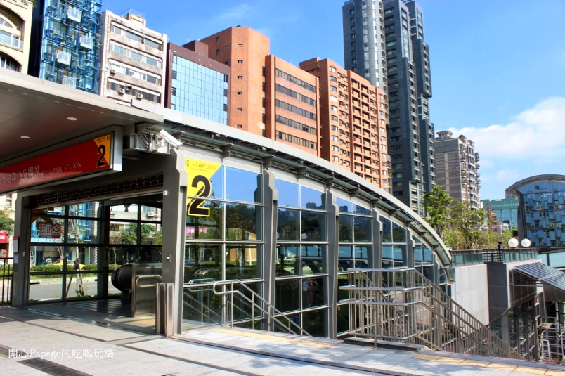
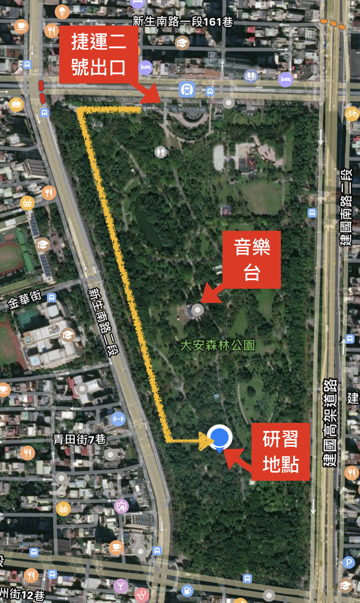
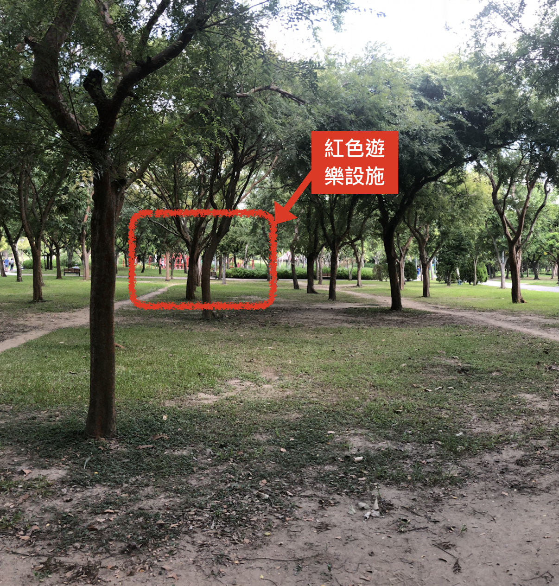
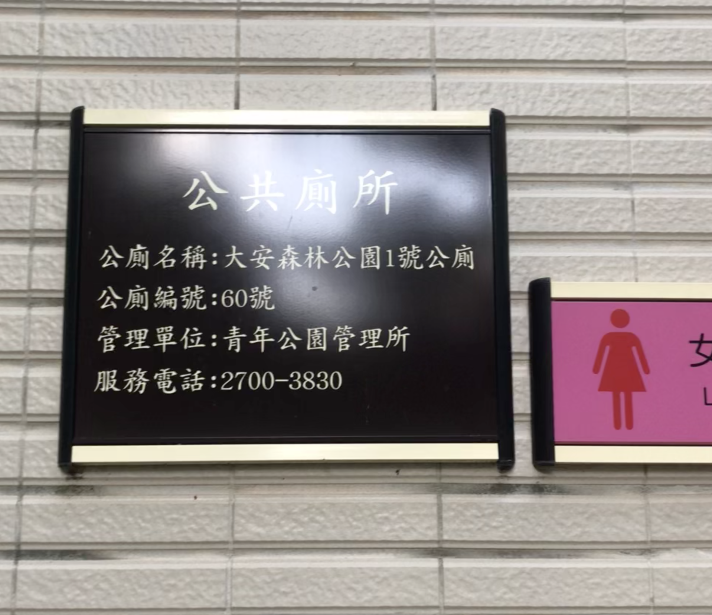

<!DOCTYPE html>
<html>

<head>
	<meta charset="utf-8">
	<title>0930太極研習</title>
	<link rel="stylesheet" href="css/normalize.css">
	<link rel="stylesheet" href="css/style.css">
	<link href='https://fonts.googleapis.com/css?family=Roboto:300,100,400' rel='stylesheet' type='text/css'>
</head>

<body>
	<div class="container">
		<header class="header">
			<div class="header__banner">
				<h1 class="header__title">辰元太極0930研習營交通說明</h1>
			</div>
		</header>

		<div class="content-area">
			<article class="main-area">
				<p class="text-style">
					新莊出發的師兄姐，請於<strong>早上7：45於新莊捷運站準時集合</strong>，大家一起搭乘捷運前往目的地「捷運大安森林公園站」，交通時間大約35分鐘可以到達。到達捷運大安森林公園站之後，在<strong>二號出口</strong>集合一起前往研習地點
				</p>


				<div class="banner">
					
					<h1 class="banner__description">二號出口!</h1>
				</div>

				<p class="text-style">
					研習地點在靠近和平東路與新生南路角落的一塊平坦陰涼樹蔭草地，自行前往的同學可以參考以下的地圖，
				</p>
				<div class="banner">
					
					
				</div>
				<p class="text-style">
					從捷運站出口走到研習地點大約15分鐘，沿途可以用音樂台作為方向確認的路標，到達研習地點往北看，可以看到<strong>一些紅色的遊樂設施</strong>，往西可以看到一號公廁，大家可以用這張照片作為地點確認。
				</p>
				<div class="banner">
						
						
					</div>
				</article> <!-- article -->
		</div>

		<footer class="footer">
			<p>&copy; 2018 - 辰元太極版權所有</p>
		</footer>
	</div>

</body>


</html>